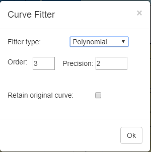

Curve Fitting
You can launch the "Curve Fitter" dialog by right clicking a legend item and selecting "fit". Alternatively, you can select "Curve Settings" from the File menu and press the Fit button. From the Fitter type dropdown menu, you can select one of six fitting types. If fit type "Weeding" is selected, you have the option of setting the "Tolerance" and the "Chunk size". The tolerance is the maximum distance, that is acceptable between the original curve and the smoothed curve. Increasing the tolerance will reduce the number of the resulting points. The chunk size limits the number of points passed to a run of the Douglas Peucker algorithm. The runtime of the Douglas Peucker algorithm increases non-linearly with the number of points. For a chunk size > 0 the polygon is split into pieces passed to the algorithm one by one. Checking the "Retain original curve" checkbox allows for the retention of the original curve. The "fitted curve" is a new curve. This feature permits the comparison of various types to the original curve. The "Generate points" checkbox is available for the Spline and Weeding fitters. Checking this checkbox ensures the Grapher generate points for the fitted curve. If you do not plan on doing points dependent operation (Area watch, Volume watch, etc.), you can uncheck the "Generate points" option to save on memory. For the polynomial fit, you can set the order of the polynomial and the precision to which coefficients are calculated. Generally, if the fitted polynomial curve is different than expected, you have to increase the precision. A fitted curve has some fitting information associated with it. Right click the legend item and select "fit info..." to view the fitting information in an Alert box. . |
|
 |

Created with the Personal Edition of HelpNDoc: Free Web Help generator